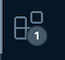

Install and set up VS Code if you don’t already have an editor you’d like to use. VS Code is an editor of choice for Julia, as it as a rich and well-supported Julia extension. If you have a different coding environment, please find instructions for how to set it up to edit Julia.
If you have already installed git, you don’t need to worry about this section. If you haven’t, download the appropriate version for your operating system.
Mac Versions
If you have a Mac, be aware if you have an Apple Silicon (M1 or M2) Mac or an Intel Mac. Many of the installations you will go through in this exercise have different versions for each processor type, and the program may not work properly if you still the wrong version. There’s nothing that can’t be undone, but it’s easier to be install the correct version first!
Install Julia
I recommend installing Julia using the juliaup tool, which will let you easily manage versions in the future and works seamlessly with VS Code. The instructions can be found at the JuliaUp GitHub repository, but we will summarize them here.
If you have a Mac, open a terminal (such as the Terminal app) and enter:
curl -fsSL https://install.julialang.org | sh
Installing Julia 1.8.5
Once you install Juliaup, install Julia version 1.8.5 by opening a terminal (in MacOS or Linux) or the command line (in Windows) and entering:
julia add 1.8.5
julia default 1.8.5
This will install Julia 1.8.5 and make it the default version, which should maximize package compatibility throughout this course. Going forward, if you want to add new versions or change the default, you can follow the Juliaup instructions.
Install and Set Up VS Code
You can skip this section if you already have a coding environment you like; just set it up to work with Julia. Otherwise, VS Code is as close to an officially supported editor for Julia as you can get. We will follow this guide for setting up VS Code with Julia.
Installing VS Code
You can download it here; open the downloaded file to install.
Install the Julia Extension
Open VS Code.
Select View and click Extensions to open the Extension View. This view can also be found on the sidebar with the following logo:
.
Search for julia in the search box. Click the green install button.
Restart VS Code once the installation is complete. It should automatically find your Julia installation; talk to Vivek if not.
The Julia VS Code extension offers you some nice features. You can start a REPL (an interactive Julia coding environment) by opening the “Command Palette” (View -> Command Palette, or CTRL/CMD+SHIFT+P) and typing “REPL” to bring up “Julia: Start REPL”. You can also create *.jl files to write Julia code and execute line by line. However, we will primarily use Jupyter notebooks in this class, but this might be useful for testing code or for your project.
Install the Jupyter Notebook Extension
The Jupyter Notebook extension allows you to export a Jupyter notebook to PDF or to HTML and then to PDF.
Otherwise, exporting to HTML and then using your browser to save the resulting page to a PDF is a perfect solution.
Follow the same instructions as above, but search for jupyter and install the Jupyter extension. Restart VS Code.
Set Up GitHub
Create GitHub Account
If you already have a GitHub account, you can use that for this course and do not need to create a new account.
Otherwise, create an account. It doesn’t have to be linked to your Cornell email or use your Cornell NetID.
For labs and homework assignments (we will work on Lab 1 in class on Friday and Homework 1 is available), you should use the GitHub Classroom link to “accept” the assignment provided on Ed Discussion, which will give you your own GitHub repository for that assignment. The first time you click one of these links, you will need to link your place on the course roster with your GitHub account.
When application exercises require notebook use (which is the case here, but will not always be), you can follow the workflow in these next steps, and will be prompted to do so in the instructions for that exercise.
You can do almost everything that you will need to do for this course with GitHub directly through VS Code, or you can use the GitHub UI or the Terminal. We will assume in these instructions that you will just work through VS Code.
Clone the Repository
Once you have created your account, navigate to the GitHub repository for the assignment. You will have your own repository for assignments that you accept through the GitHub Classroom links, but for now, let’s use this common repository. Click the green “Code” button, and copy the URL by clicking on the clipboard icon.
Code Clone Interface on GitHub
Next, open a new VS Code window. You should see the following options.
VS Code New Window
Click “Clone Git Repository” and select “Clone from GitHub” when it pops up. Paste the URL for the repository into the search bar and select the repository that comes up. You will then be prompted to pick a location to save the repository. I recommend keeping a single master folder for the course, which can then be divided into aes (for application exercises), labs, and hws. For example:
BEE4750
|---aes
|---labs
|---hws
Then, pick the appropriate subdirectory. When you clone the repository, it will automatically create a directory for the repository, so you do not need to create the ae01 repository explicity. Just select aes.
Once you do that, you will be prompted to open the new folder. The next time you want to work on the notebook, pick “Open Folder” from the initial VS Code New Window page and find the folder that was created (for example aes/ae01.) Opening a folder is recommended, as it will provide a more convenient interface for working with the entire repository, versus opening a single file.
Working with GitHub Repositories
In this assignment, we’re only asking you to clone a Github repository. In Lab 1, you will be asked to “commit” and “push” your files to synchronize your local repository with your personal GitHub Classroom repository, which allows you to keep code updated. This is useful for ensuring that you have a backup of your files with tracked changes (for example, if you try to redo a problem but break something), and will make it easy to ask for help on Ed Discussion (just add a link to your repository with the current version of your code that isn’t working as intended).
Open and Edit The Notebook
Open Notebook and Select Julia Kernel
Open the ae01.ipynb file.
.ipynb files
The .ipynb extension is for Jupyter notebooks, and this should be the primary file type you work with on most assignments for this course.
Jupyter notebooks consist of two types of “cells, which are editable areas”:
“Text” cells, in which you can write text using Markdown, which uses minimal styling to format text. You can see the “raw” Markdown for any cell by double clicking on it to make it editable. Text cells can also be used to format mathematics using LaTeX syntax, but no LaTeX is actually required for this to work.
“Code” cells, which contain code which can be evaluated. The language of the code should match the kernel used for compilation (see below). A “play” button will appear next to a code cell which can be used to evaluate the cell’s contents. Be careful that running cells out of order can result in errors or bad results, as each cell is evaluated independently, so if a function or variable is specified in a prior cell which is not executed, a later cell which requires those values will not work properly. Before submitting, make sure to evaluate all cells in order (for example, using the “Run All” button at the top of the VS Code window).
In the upper right corner, you should see an icon similar to this (but perhaps with different text):
.
This is where you will click to select the “kernel” which is used to compile the Jupyter notebook. Click it, and you will be prompted to select a kernel. You likely need to select “Select Another Kernel…”, then “Julia Language Support,” and then “Julia 1.8 channel.”
Edit Notebook
Finally, let’s make some edits to the notebook.
Double click the text cell at the top of the notebook that includes the “Name:” and “ID:” prompts. Add your name and Cornell NetID.
Create a code cell below this by hovering your cursor over the bottom of this text cell. You should see the following buttons pop up:
Click on “+Code” and the new cell should appear.
In this code cell, write a function to compute the square of a value \(x\). The code should have the following basic structure:
# the following is how you define a function # called "square_function" which accepts an input argument x.functionsquare_function(x)# put your code herereturn# add in the variable or value that should be returnedend
square_function (generic function with 1 method)
Test your function by computing \(2^2\) and \(4.5^2\). We’ve added a cell evaluating the square_function(2); add one evaluating square_function(4.5).
The @show macro nicely formats output to include the name of the output that’s being shown. The line ends with a semi-colon (;) to suppress the direct output of the cell (which would be redundant, but isn’t a problem). Otherwise, the semi-colon is not mandatory; it only serves the purpose of suppressing output from a given line.
@showsquare_function(2);
square_function(2) = nothing
Export the Notebook
Congratulations, you’ve set up Julia and GitHub and learned the basics of working with Jupyter Notebooks! The last step is to export the notebook for submission to Gradescope.
You should see the following menu bar at the top of the VS Code window:
Click “Run All” at the top to execute all of the cells in order. Please do not forget to do this before exporting and submitting or you may lose points because your code has not been executed or may have errors.
Click the ellipsis (“…”) and select “Export”. If you have LaTeX installed, you can click “PDF”; otherwise, click “HTML.” Save the file, and then when prompted, open the file. This should open the page in your browser; go to the print interface and save as a PDF. ::: {.callout-tip} When printing to PDF, long lines will run off the edge of code cells, which may result in comments or code being hidden. If you see this, go back to the notebook and break up long lines into shorter onces (for example, see the comment in the above code cell) to ensure key parts of your results aren’t missing. :::
Great! That’s the basic workflow for every assignment in this course.
Now you have your PDF that you can submit to Gradescope. Make sure that you tag pages corresponding to relevant problems to avoid a 10% penalty. For this exercise, tag page 1 for Problem 1 (submission of the PDF) and the page with your square function code for Problem 2.


 .
.